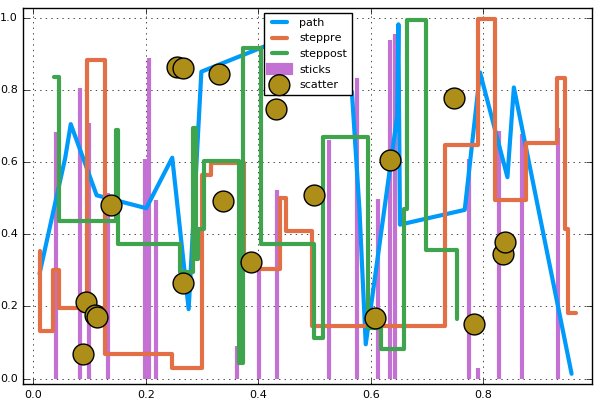

PyPlot
Initialize
using Plots pyplot()
Lines
A simple line plot of the columns.
plot(Plots.fakedata(50,5),w=3)
Functions, adding data, and animations
Plot multiple functions. You can also put the function first, or use the form plot(f, xmin, xmax) where f is a Function or AbstractVector{Function}.
Get series data: x, y = plt[i]. Set series data: plt[i] = (x,y). Add to the series with push!/append!.
Easily build animations. (convert or ffmpeg must be available to generate the animation.) Use command gif(anim, filename, fps=15) to save the animation.
p = plot([sin,cos],zeros(0),leg=false) anim = Animation() for x = linspace(0,10π,100) push!(p,x,Float64[sin(x),cos(x)]) frame(anim) end
Parametric plots
Plot function pair (x(u), y(u)).
plot(sin,(x->begin sin(2x) end),0,2π,line=4,leg=false,fill=(0,:orange))

Colors
Access predefined palettes (or build your own with the colorscheme method). Line/marker colors are auto-generated from the plot's palette, unless overridden. Set the z argument to turn on series gradients.
y = rand(100) plot(0:10:100,rand(11,4),lab="lines",w=3,palette=:grays,fill=(0,:auto),α=0.6) scatter!(y,zcolor=abs(y - 0.5),m=(:heat,0.8,stroke(1,:green)),ms=10 * abs(y - 0.5) + 4,lab="grad")

Global
Change the guides/background/limits/ticks. Convenience args xaxis and yaxis allow you to pass a tuple or value which will be mapped to the relevant args automatically. The xaxis below will be replaced with xlabel and xlims args automatically during the preprocessing step. You can also use shorthand functions: title!, xaxis!, yaxis!, xlabel!, ylabel!, xlims!, ylims!, xticks!, yticks!
y = rand(20,3) plot(y,xaxis=("XLABEL",(-5,30),0:2:20,:flip),background_color=RGB(0.2,0.2,0.2),leg=false) hline!(mean(y,1) + rand(1,3),line=(4,:dash,0.6,[:lightgreen :green :darkgreen])) vline!([5,10]) title!("TITLE") yaxis!("YLABEL",:log10)
Images
Plot an image. y-axis is set to flipped
import Images img = Images.load(Pkg.dir("PlotReferenceImages","Plots","pyplot","0.7.0","ref1.png")) plot(img)

Arguments
Plot multiple series with different numbers of points. Mix arguments that apply to all series (marker/markersize) with arguments unique to each series (colors). Special arguments line, marker, and fill will automatically figure out what arguments to set (for example, we are setting the linestyle, linewidth, and color arguments with line.) Note that we pass a matrix of colors, and this applies the colors to each series.
ys = Vector[rand(10),rand(20)] plot(ys,color=[:black :orange],line=(:dot,4),marker=([:hex :d],12,0.8,stroke(3,:gray)))

Build plot in pieces
Start with a base plot...
plot(rand(100) / 3,reg=true,fill=(0,:green))

and add to it later.
scatter!(rand(100),markersize=6,c=:orange)

Histogram2D
histogram2d(randn(10000),randn(10000),nbins=20)
Line types
linetypes = [:path :steppre :steppost :sticks :scatter] n = length(linetypes) x = Vector[sort(rand(20)) for i = 1:n] y = rand(20,n) plot(x,y,line=(linetypes,3),lab=map(string,linetypes),ms=15)

Line styles
styles = setdiff(supported_styles(),[:auto])' plot(cumsum(randn(20,length(styles)),1),style=:auto,label=map(string,styles),w=5)

Marker types
markers = setdiff(supported_markers(),[:none,:auto,Shape])' n = length(markers) x = (linspace(0,10,n + 2))[2:end - 1] y = repmat(reverse(x)',n,1) scatter(x,y,m=(8,:auto),lab=map(string,markers),bg=:linen,xlim=(0,10),ylim=(0,10))

Bar
x is the midpoint of the bar. (todo: allow passing of edges instead of midpoints)
bar(randn(99))

Histogram
histogram(randn(1000),nbins=20)

Subplots
Use the layout keyword, and optionally the convenient @layout macro to generate arbitrarily complex subplot layouts.
l = @layout([a{0.1h},b [c,d e]]) plot(randn(100,5),layout=l,t=[:line :histogram :scatter :steppre :bar],leg=false,ticks=nothing,border=false)

Adding to subplots
Note here the automatic grid layout, as well as the order in which new series are added to the plots.
plot(Plots.fakedata(100,10),layout=4,palette=[:grays :blues :heat :lightrainbow],bg_inside=[:orange :pink :darkblue :black])

srand(111) plot!(Plots.fakedata(100,10))

Open/High/Low/Close
Create an OHLC chart. Pass in a list of (open,high,low,close) tuples as your y argument. This uses recipes to first convert the tuples to OHLC objects, and subsequently create a :path series with the appropriate line segments.
n = 20 hgt = rand(n) + 1 bot = randn(n) openpct = rand(n) closepct = rand(n) y = OHLC[(openpct[i] * hgt[i] + bot[i],bot[i] + hgt[i],bot[i],closepct[i] * hgt[i] + bot[i]) for i = 1:n] ohlc(y)

Annotations
The annotations keyword is used for text annotations in data-coordinates. Pass in a tuple (x,y,text) or a vector of annotations. annotate!(ann) is shorthand for plot!(; annotation=ann). Series annotations are used for annotating individual data points. They require only the annotation... x/y values are computed. A PlotText object can be build with the method text(string, attr...), which wraps font and color attributes.
y = rand(10) plot(y,annotations=(3,y[3],text("this is #3",:left)),leg=false) annotate!([(5,y[5],text("this is #5",16,:red,:center)),(10,y[10],text("this is #10",:right,20,"courier"))]) scatter!(linspace(2,8,6),rand(6),marker=(50,0.2,:orange),series_annotations=["series","annotations","map","to","series",text("data",:green)])

Custom Markers
A Plots.Shape is a light wrapper around vertices of a polygon. For supported backends, pass arbitrary polygons as the marker shapes. Note: The center is (0,0) and the size is expected to be rougly the area of the unit circle.
verts = [(-1.0,1.0),(-1.28,0.6),(-0.2,-1.4),(0.2,-1.4),(1.28,0.6),(1.0,1.0),(-1.0,1.0),(-0.2,-0.6),(0.0,-0.2),(-0.4,0.6),(1.28,0.6),(0.2,-1.4),(-0.2,-1.4),(0.6,0.2),(-0.2,0.2),(0.0,-0.2),(0.2,0.2),(-0.2,-0.6)] x = 0.1:0.2:0.9 y = 0.7 * rand(5) + 0.15 plot(x,y,line=(3,:dash,:lightblue),marker=(Shape(verts),30,RGBA(0,0,0,0.2)),bg=:pink,fg=:darkblue,xlim=(0,1),ylim=(0,1),leg=false)

Contours
Any value for fill works here. We first build a filled contour from a function, then an unfilled contour from a matrix.
x = 1:0.5:20 y = 1:0.5:10 f(x,y) = begin (3x + y ^ 2) * abs(sin(x) + cos(y)) end X = repmat(x',length(y),1) Y = repmat(y,1,length(x)) Z = map(f,X,Y) p1 = contour(x,y,f,fill=true) p2 = contour(x,y,Z) plot(p1,p2)

Pie
x = ["Nerds","Hackers","Scientists"] y = [0.4,0.35,0.25] pie(x,y,title="The Julia Community",l=0.5)

3D
n = 100 ts = linspace(0,8π,n) x = ts .* map(cos,ts) y = (0.1ts) .* map(sin,ts) z = 1:n plot(x,y,z,zcolor=reverse(z),m=(10,0.8,:blues,stroke(0)),leg=false,cbar=true,w=5) plot!(zeros(n),zeros(n),1:n,w=10)

DataFrames
Plot using DataFrame column symbols.
import RDatasets iris = RDatasets.dataset("datasets","iris") scatter(iris,:SepalLength,:SepalWidth,group=:Species,title="My awesome plot",xlabel="Length",ylabel="Width",marker=(0.5,[:+ :h :star7],12),bg=RGB(0.2,0.2,0.2))

Groups and Subplots
group = rand(map((i->begin "group $(i)" end),1:4),100) plot(rand(100),layout=@layout([a b;c]),group=group,n=3,linetype=[:bar :scatter :steppre])
Polar Plots
Θ = linspace(0,1.5π,100) r = abs(0.1 * randn(100) + sin(3Θ)) plot(Θ,r,proj=:polar,m=2)

Heatmap, categorical axes, and aspect_ratio
xs = [string("x",i) for i = 1:10] ys = [string("y",i) for i = 1:4] z = float((1:4) * 1:10') heatmap(xs,ys,z,aspect_ratio=1)
Layouts, margins, label rotation, title location
plot(rand(100,6),layout=@layout([a b;c]),title=["A" "B" "C"],title_location=:left,left_margin=[20mm 0mm],bottom_margin=50px,xrotation=60)
Boxplot and Violin series recipes
import RDatasets singers = RDatasets.dataset("lattice","singer") violin(singers,:VoicePart,:Height,marker=(0.2,:blue,stroke(0))) boxplot!(singers,:VoicePart,:Height,marker=(0.3,:orange,stroke(2)))
- Supported arguments:
annotations,arrow,aspect_ratio,background_color,background_color_inside,background_color_legend,background_color_outside,bar_edges,bar_width,bins,clims,color_palette,colorbar,contours,fillalpha,fillcolor,fillrange,foreground_color,foreground_color_axis,foreground_color_border,foreground_color_grid,foreground_color_legend,foreground_color_text,grid,group,guidefont,label,layout,legend,legendfont,levels,linealpha,linecolor,linestyle,linewidth,marker_z,markeralpha,markercolor,markershape,markersize,markerstrokealpha,markerstrokecolor,markerstrokewidth,match_dimensions,n,nc,normalize,nr,orientation,overwrite_figure,polar,quiver,ribbon,seriesalpha,seriescolor,seriestype,show,size,smooth,subplot,tickfont,title,weights,window_title,x,xerror,xflip,xguide,xlims,xrotation,xscale,xticks,y,yerror,yflip,yguide,ylims,yrotation,yscale,yticks,z,z,zflip,zguide,zlims,zrotation,zscale,zticks - Supported values for linetype:
:bar,:contour,:contour3d,:heatmap,:hexbin,:histogram,:histogram2d,:hline,:image,:line,:none,:path,:path3d,:pie,:scatter,:scatter3d,:shape,:steppost,:steppre,:sticks,:surface,:vline,:wireframe - Supported values for linestyle:
:auto,:dash,:dashdot,:dot,:solid - Supported values for marker:
:Plots.Shape,:auto,:cross,:diamond,:dtriangle,:circle,:heptagon,:hexagon,:hline,:none,:octagon,:pentagon,:rect,:star4,:star5,:star6,:star7,:star8,:utriangle,:vline,:xcross(Automatically generated: 2016-06-10T13:38:20)